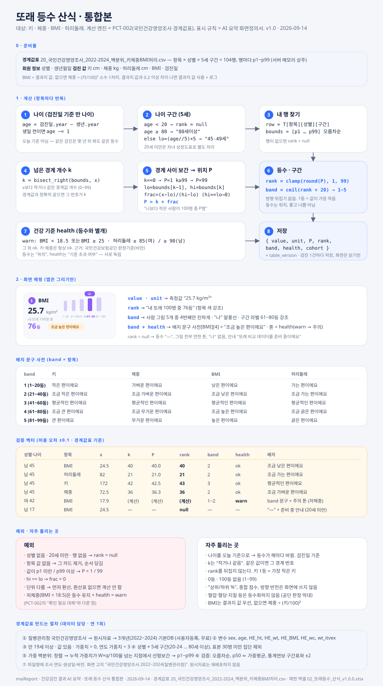
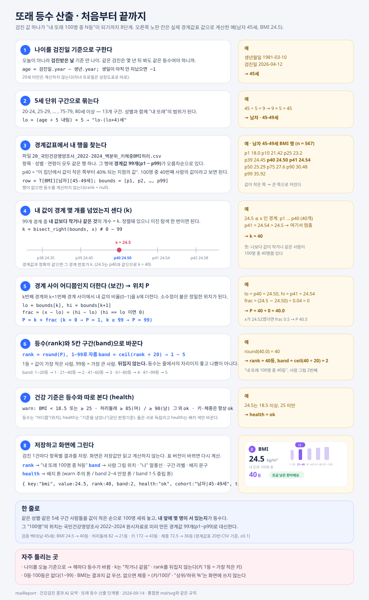
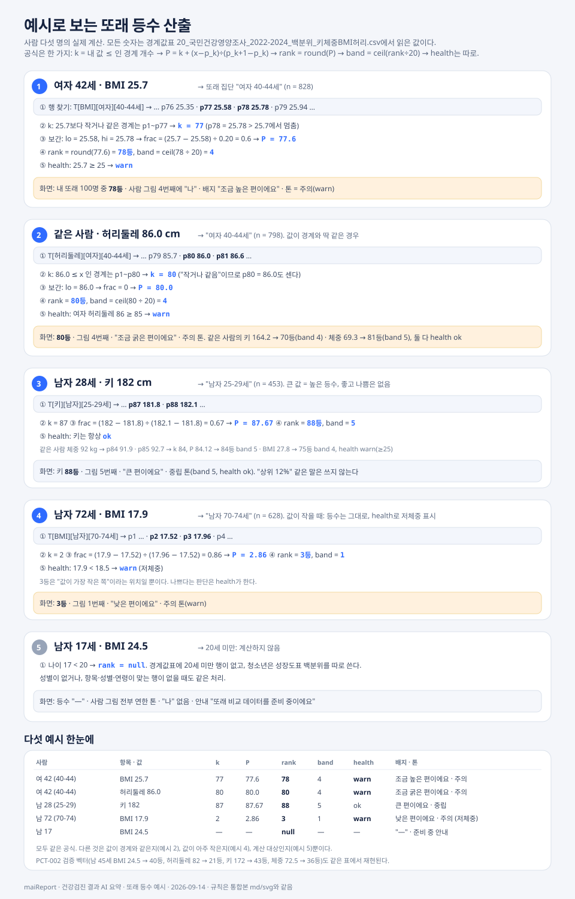

또래 등수 산식 최종본
"내 또래 100명 중 N등"이 어떻게 계산되는지를 한 장 규격 · 단계별 설명 · 실제 예시 · 경계값표 파일 네 가지로 정리했습니다. 대상은 키 · 체중 · BMI · 허리둘레 네 항목이고, 계산 엔진은 PCT-002(국민건강영양조사 경계값표), 표시 규칙은 AI 요약 화면정의서를 따릅니다. 개발·디자인·데이터 담당이 이 문서 하나로 같은 규칙을 봅니다.
산식 한 줄
k = 내 값보다 작거나 같은 경계값 개수 (p1~p99 중) # bisect_right P = k + (x − p_k) ÷ (p_k+1 − p_k) (k=0 → 1, k≥99 → 99) # 경계 사이 보간 rank = round(P), 1~99로 자름 # "N등" band = ceil(rank ÷ 20) # 1~5, 사람 그림 위치 health = warn if BMI < 18.5 or BMI ≥ 25 or 허리둘레 ≥ 85(여)/90(남) # 등수와 별개
나이는 검진일 기준 만 나이, 5세 구간. 20세 미만·성별 없음·행 없음이면 rank = null. 방향 뒤집기 없음. "상위/하위 %"는 화면에 쓰지 않음.
한 장 규격
준비물 → 계산 8단계 → 화면 매핑 → 배지 사전 → 검증 벡터 → 예외 → 경계값표 생성 절차.

단계별로 따라가기
값 하나가 등수가 되기까지 8단계. 오른쪽 노란 칸은 남자 45세 BMI 24.5를 실제 경계값표로 계산한 예입니다.

예시로 보기
사람 다섯 명. 보간이 있는 경우, 값이 경계와 같은 경우, 큰 값, 아주 작은 값(저체중), 계산하지 않는 경우.

검증 벡터
구현 후 아래 값이 나오면 맞습니다(허용 오차 ±0.1). 경계값표 20번 CSV 기준.
| 성별 · 나이 | 항목 | x | k | P | rank | band | health | 배지 |
|---|---|---|---|---|---|---|---|---|
| 남 45 | BMI | 24.5 | 40 | 40.0 | 40 | 2 | ok | 조금 낮은 편이에요 |
| 남 45 | 허리둘레 | 82 | 21 | 21.0 | 21 | 2 | ok | 조금 가는 편이에요 |
| 남 45 | 키 | 172 | 42 | 42.5 | 43 | 3 | ok | 평균적인 편이에요 |
| 남 45 | 체중 | 72.5 | 36 | 36.3 | 36 | 2 | ok | 조금 가벼운 편이에요 |
| 여 42 | BMI | 25.7 | 77 | 77.6 | 78 | 4 | warn | 조금 높은 편이에요 · 주의 톤 |
| 여 42 | 허리둘레 | 86.0 | 80 | 80.0 | 80 | 4 | warn | 조금 굵은 편이에요 · 주의 톤 |
| 남 28 | 키 | 182 | 87 | 87.67 | 88 | 5 | ok | 큰 편이에요 · 중립 톤 |
| 남 72 | BMI | 17.9 | 2 | 2.86 | 3 | 1 | warn | 낮은 편이에요 · 주의 톤 (저체중) |
| 남 17 | BMI | 24.5 | — | — | null | — | — | "—" + 준비 중 안내 |
파일
- 20_국민건강영양조사_2022-2024_백분위_키체중BMI허리.csv — 경계값표. 항목·성별·연령·n·가중평균·가중표준편차·p1~p99, 104행, UTF-8(BOM). 원본의 깨진 한글 라벨을 복원한 사본
- 또래등수_산식_통합본.md — 01장의 텍스트 원문 (개발 전달용)
- 또래등수_산식_통합본_v1.0.0.svg · 또래등수_랭킹산출_단계별_v1.0.0.svg · 또래등수_예시로_보는_산출_v1.0.0.svg — 위 그림 원본
{kind=link}
{kind=link}
{kind=link}
통계연보 구간 보간으로 만든 임시 표(또래등수_경계값표_신체계측4항목_2024.csv, 또래등수_참조표_*.csv/xlsx)와 또래등수_산식_전달본.md는 이 최종본으로 대체합니다. 참고용으로만 남겨 둡니다.
출처: 질병관리청 국민건강영양조사 2022~2024 원시자료(경계값표) · 국민건강보험공단 건강검진 실시기준 별표 4(비만 기준, health). 원시자료는 재배포하지 않고 경계값표만 배포합니다.